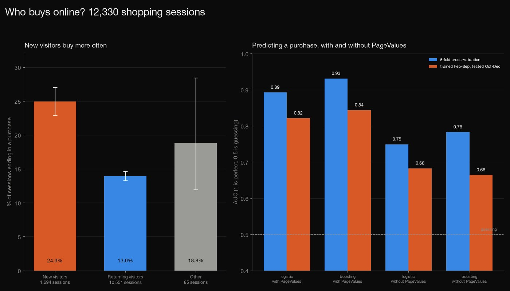
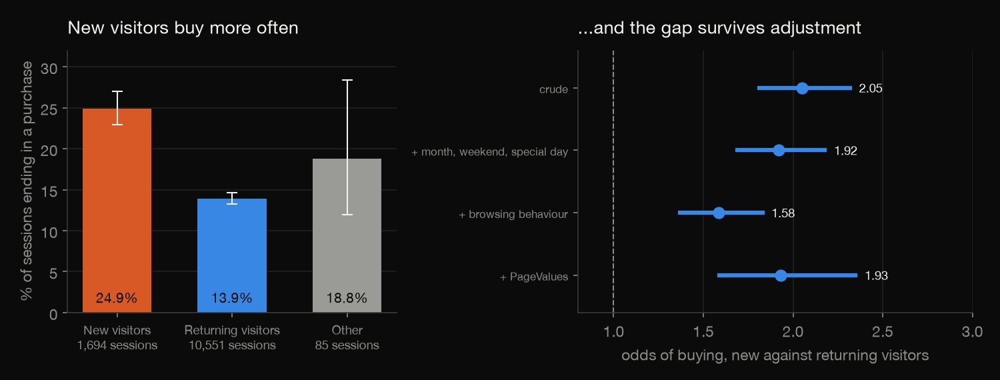
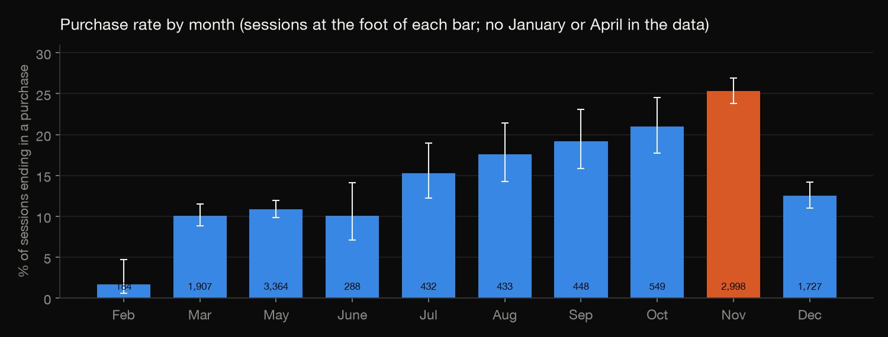
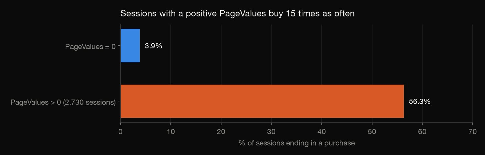
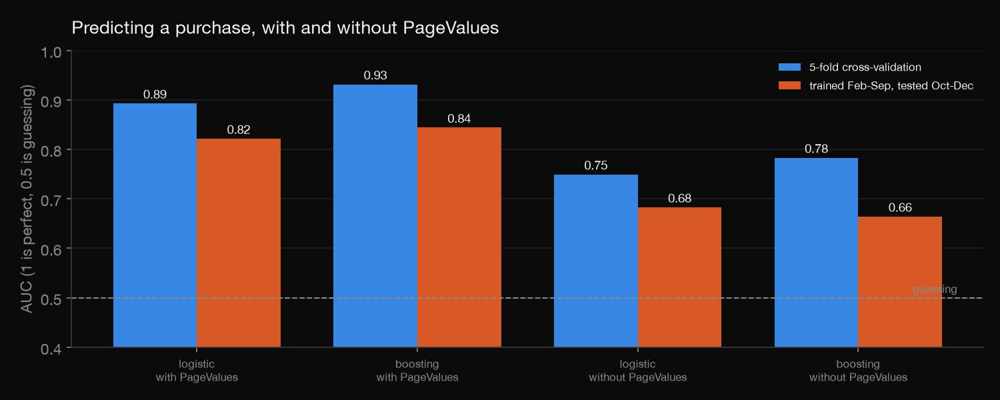

Python · Predictive modeling · 2026-10
Who Buys Online?
12,330 shopping sessions from one online shop: new visitors buy almost twice as often as returning ones, even after adjusting for season and browsing, and a purchase model's score falls from an AUC of 0.93 to 0.78 once its leakiest feature is removed.

One shop for one year; January and April are not in the data. PageValues is treated as leaky because of how it is defined (the average value of the pages visited before a transaction); the data cannot show how it was computed for each session. "New against returning" is an association, not proof that being new makes a visitor more likely to buy. The models use default settings, a fixed seed and no tuning.
01 — The problem
An online shop logs every visit: which pages, for how long, whether the visitor had been before, and whether the visit ended in a purchase. Do first-time visitors buy differently from returning ones, and how well can a model tell which visits will end in a sale?
The questions follow DataCamp's "Will This Customer Purchase Your Product?" project. The data is the UCI Online Shoppers Purchasing Intention dataset: real sessions from one shop over a year.
02 — What I built
12,330 sessions, audited and analysed three ways:
- Who buys: purchase rates by visitor type, month and weekend, with intervals and a z-test.
- Does the gap survive? Four logistic regressions, adding season, browsing behaviour and PageValues step by step.
- Prediction: logistic regression and gradient boosting, with and without a feature computed from purchases, scored two ways.
- Check:
check.pyrecomputes all 136 numbers: the tests by formula, the regressions by hand-written Newton-Raphson, the model scores from saved predictions.
03 — How it was built
- 01
Download the sessions
UCI's dataset 468 (CC BY 4.0), one row per session: pages visited and time spent by page type, bounce and exit rates, PageValues, month, weekend, visitor type and whether it ended in a purchase. It is 1 MB, so the file is committed with its checksum.
- 02
Audit before analysing
125 sessions are exact duplicates (kept; the purchase rate is 15.5% with them and 15.6% without). No values are missing, only ten months are present, and 38 sessions have no product pages. One column stands out: sessions with a positive PageValues buy 56.3% of the time, against 3.9% when it is zero.
- 03
Compare new and returning visitors
Purchase rates with Wilson intervals, and a two-proportion z-test of new against returning visitors, with the difference and its interval.
z = (p1 - p2) / math.sqrt(pp * (1 - pp) * (1 / n1 + 1 / n2)); se = math.sqrt(p1 * (1 - p1) / n1 + p2 * (1 - p2) / n2) - 04
Adjust step by step
Four logistic regressions for the odds of a purchase, each adding to the last: nothing, then month, weekend and special day, then browsing behaviour, then PageValues. If the new-visitor odds ratio fell to 1, the gap would be explained away.
r = sm.Logit(d["Revenue"], design(d, level)).fit(disp=0, method="newton", maxiter=100) - 05
Predict, with and without PageValues
Logistic regression and gradient boosting, each with and without PageValues. Scored two ways: 5-fold cross-validation, where every session is predicted by a model that never saw it, and a time split, training on February to September and testing on October to December.
- 06
Score the models honestly
AUC (the chance a random buyer is ranked above a random non-buyer), average precision (which suits the 15% of sessions that buy), and the share of all buyers found in the top tenth of predicted sessions.
top = np.argsort(-p)[: len(d) // 10] - 07
Recompute it by hand
check.pyrebuilds the tables and tests from the raw CSV with textbook formulas, refits the four logistic regressions with a hand-written Newton-Raphson on a design matrix built by hand, and recomputes every model score from the saved predictions with rank and sort formulas. The predictions are stored at full precision: stored rounded to six decimals, the recomputed average precision differed in the third decimal because of ties. All 136 numbers agree.recall = tp / total ap += (recall - prev_recall) * tp / (tp + fp)
04 — Results

New visitors buy more often. 24.9% of the 1,694 new-visitor sessions ended in a purchase (95% interval 22.9 to 27.0), against 13.9% of the 10,551 returning ones (13.3 to 14.6): a gap of 11.0 points (8.8 to 13.1; z = 11.6). Overall 15.5% of sessions purchase.
| New-visitor odds | Ratio | 95% CI |
|---|---|---|
| Crude | 2.05 | 1.81–2.32 |
| + season, weekend | 1.92 | 1.69–2.18 |
| + browsing | 1.58 | 1.37–1.83 |
| + PageValues | 1.93 | 1.59–2.35 |
The gap survives adjustment. The odds ratio for a new visitor is 2.05 crude and still 1.92 with month, weekend and special day, 1.58 with browsing behaviour and 1.93 with PageValues: new visitors are more likely to buy than returning ones with similar browsing.

Season and weekend. The purchase rate is 10% to 11% in March, May and June, rises to 17.6% in August, 21.0% in October and 25.4% in November (2,998 sessions), then 12.5% in December; February has 3 purchases in 184 sessions. Weekend sessions purchase 17.4% against 14.9% on weekdays.

PageValues does the work. Sessions with a positive PageValues (2,730 of them) buy 56.3% of the time, against 3.9% when it is zero. The dataset defines it as the average value of the pages visited before a transaction, so it is computed from purchases: a model that uses it is partly reading the answer.

| Model | CV | Time | Top 10% |
|---|---|---|---|
| Boosting + PV | 0.93 | 0.84 | 50.3% |
| Boosting | 0.78 | 0.66 | 26.8% |
| Logistic + PV | 0.89 | 0.82 | 46.4% |
| Logistic | 0.75 | 0.68 | 24.5% |
Prediction, with and without it. The columns are the AUC in cross-validation, the AUC on the time split (train February to September, test October to December), and the share of all buyers found in the top tenth of predicted sessions; "+ PV" means with PageValues. With it, boosting reaches 0.93 and its top tenth captures half of all buyers. Without it, the same model reaches 0.78 and captures 26.8%, and on the time split it falls to 0.66, below logistic regression (0.68).
05 — What I'd do next
- Rebuild the model using only what is known before a session ends, and compare it with a simple rule such as "has put something in the basket", if the data had it.
- Find session dates, not just months, so the time split can follow real time.
- Look into why new visitors convert more, using the traffic and campaign codes if their meanings are available.